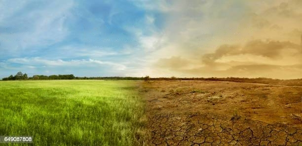
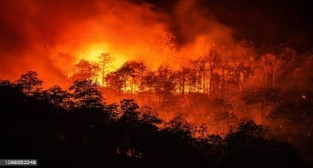
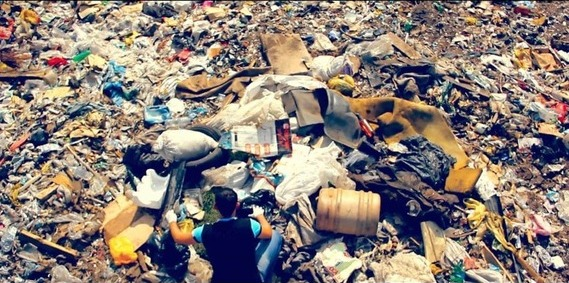
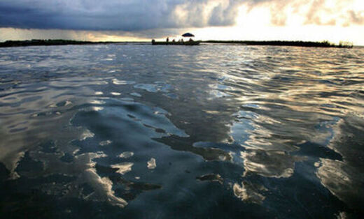
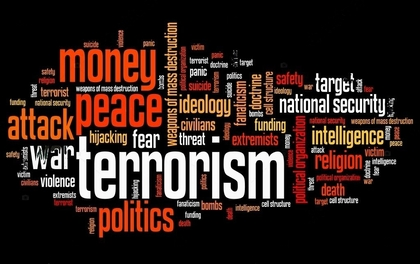

Глобальное нагревание и климатические изменения –это процесс постепенного повышения средней температуры на поверхности Земли за последние десятилетия.
Связано это с увеличением выбросов парниковых газов,таких как углекислый газ,метан и окись азота,вызванных деятельностью человека,такой как производство энергии,транспорт и земледелие.
Климатические изменения,вызванные глобальным нагреванием,могут иметь серьезные последствия для жизни на Земле. Возможными последствиями являются увеличение уровня морей,повышение температур водных бассейнов и поверхностей,изменение режимов осадков и растительности,увеличение частоты и интенсивности экстремальных погодных условий,таких как сильные штормы,наводнения и засухи.


Экологические проблемы
Экологические проблемы – это широкий спектр проблем, связанных с воздействием человеческой деятельности на природную среду. Они включают в себя загрязнение воздуха, воды и почвы, разрушение природных экосистем, угрозу для биоразнообразия и изменение климата.
Экологические проблемы могут быть катастрофическими для нашей планеты и всех живых существ. Они могут привести к ухудшению качества жизни, распространению заболеваний, и даже к гибели экосистем и видов животных и растений. Кроме того, экологические проблемы могут вызвать экономические и социальные последствия, так как они могут привести к сокращению продуктивности сельского хозяйства, потере рабочих мест и повышению цен на продукты питания. Поэтому борьба с экологическими проблемами является важной задачей для всего человечества.


Экономические проблемы
Экономические проблемы – это широкий спектр проблем, связанных с производством, распределением и потреблением товаров и услуг.
Некоторые из основных экономических проблем включают в себя:
1.Бедность и безработица: Эти проблемы являются одними из главных вызовов для многих стран в мире. Они влияют на жизнь миллионов людей и могут привести к социальной нестабильности.
2.Неравенство: Неравенство доходов и богатства может привести к социальным проблемам, таким как массовые протесты, социальная напряженность и несправедливость.
3.Высокие цены на жилье: в некоторых странах высокие цены на жилье могут привести к тому, что многие люди не могут себе позволить купить собственное жилье, что может ухудшить их жизненные условия.
4.Инфляция: Инфляция является проблемой, когда цены на товары и услуги растут быстрее, чем уровень заработной платы, что может привести к снижению покупательной способности и ухудшению экономической ситуации в стране.
Общая опасность экономических проблем заключается в том, что они могут привести к социальным и политическим нестабильностям, повышению уровня бедности и неравенства, ухудшению качества жизни людей и неспособности страны развиваться и конкурировать на мировой арене.
Проблемы безопасности
Проблемы безопасности – это широкий термин, который включает в себя множество различных аспектов, связанных с защитой людей и государственных интересов от угроз и опасностей.
Некоторые из основных проблем безопасности включают в себя:
1.Терроризм - это использование насилия и угроз насилия в политических целях. Террористические акты могут иметь международное значение и приводить к большому количеству жертв.
2.Кибербезопасность - это защита компьютерных систем и сетей от кибератак, в том числе кражи данных и хакерских атак. Кибербезопасность становится все более важной, поскольку все больше информации хранится в цифровом формате.
3.Конфликты международного уровня - это конфликты между государствами или группами государств, которые могут привести к военному конфликту или использованию ядерного оружия.
4.Организованная преступность - это организованные группы, занимающиеся преступной деятельностью, такие как контрабанда, наркоторговля, проституция, мошенничество и другие виды преступлений.
5.Национальная безопасность - это защита государственных интересов, включая территориальную целостность, политическую стабильность и экономическое развитие.

Проблемы с доступом к образованию и здравоохранению
Проблемы с доступом к образованию и здравоохранению – это широко распространенные социальные проблемы, которые могут затрагивать людей по всему миру. Эти проблемы могут быть вызваны многими факторами, включая экономическую дискриминацию, отсутствие доступности и доступности ресурсов, культурные препятствия и др.
Несправедливое распределение образовательных и медицинских ресурсов в различных странах, недостаточное финансирование соответствующих систем, недоступность услуг для бедных слоев населения и людей, живущих в отдаленных регионах - все это приводит к серьезным последствиям для здоровья и образования людей.
Отсутствие доступа к качественному образованию может привести к ограниченным возможностям развития личности, затруднить поиск работы и повышение доходов, а также привести к социальному неравенству и неполноценному участию в жизни общества.
Отсутствие доступа к здравоохранению может привести к серьезным проблемам со здоровьем и ухудшению качества жизни. Бедные слои населения и люди часто не могут позволить себе оплату медицинских услуг, а также сталкиваются с ограниченным доступом к необходимым лекарствам и медицинскому оборудованию. Это может привести к смертности и инвалидности, а также к распространению инфекционных заболеваний.
Общая опасность заключается в том, что они могут привести к серьезным социальным, экономическим и здравоохранительным последствиям, а также к нарушению прав человека и социальному неравенству.